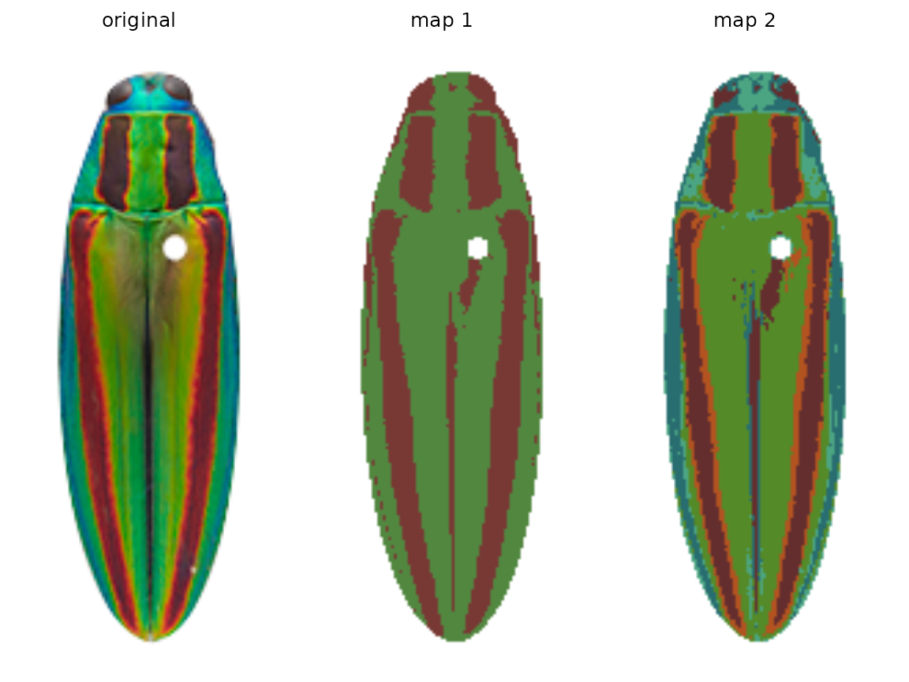

step00_prep.RmdWhat to do before you use recolorize.
You can also tour the functions in the function gallery.
A ‘correct’ color map depends on your question, so define your question before you start.
If you can, take all your photographs with the same camera, lighting setup, and color/white balance.
Mask the background out of each image, setting it to either transparent (recommended, only works with PNGs) or some uniform color (less effective, but works with JPEGs).
Color segmentation can be a real rabbit hole—that is, it can be pretty easy to become fixated on getting perfect results, or on trying to define some objective standard for what correct segmentation looks like. The problem with this mindset is that there’s no set of universal parameters that will give you perfect segmentation results for every image, because images alone don’t always contain all the relevant information: color variation due to poor lighting in one image could be just as distinct as color variation due to pattern striations in another.
The correct output for color segmentation depends on your goal: are you concerned with identifying regions of structural vs. pigmented color? Does the intensity of the stain on your slide matter, or just presence/absence? If you have a few dozen stray pixels of the wrong color in an image with hundreds of thousands of correctly categorized pixels, will that meaningfully affect your calculations? (This last one can save you a lot of angst.)
Let’s take the jewel beetle (family Buprestidae) images that come with the package as an example. If I want to segment the lefthand image (Chrysochroa fulgidissima), the solution depends on my question. If my question is “How does the placement and size of these red bands compare to that of closely related beetles?” then I really just want to separate the red bands from the rest of the body, so I would want the color map in the middle. If my question is “How much do these red bands stand out from the iridescent green base of the beetle?” then I care about the brighter orange borders of the bands, because these increase the boundary strength and overall contrast in the beetle’s visual appearance—so I would go with map 2 on the right.

For some kinds of questions, there are more rigorous definitions for color clustering. For example, the micaToolbox plug-in for ImageJ gives you the option to use receptor noise-limited (RNL) clustering, where color patches are clustered using perceptual thresholds for animal visual systems: if your chosen visual system cannot discriminate between two colors, they are combined into a single cluster. But this method doesn’t apply to questions that are not specifically to do with how one organism perceives another.
Recolorize will only be useful to you if you have already defined what an accurate color map looks like for your research question, so before you start, I highly recommend writing down precisely what you want to measure at the end of your analysis, to avoid becoming weighed down by details that may not matter. It will save you a lot of time.
A full discussion of how to take good images for color analysis is beyond the scope of this tutorial (and probably this author), and there are lots of guides already available. In an ideal case, all of your images were taken:
A uniform background (such as grey cardstock) is also helpful.
Images should be high enough resolution that the pattern elements of interest can be distinguished from one another. There’s not much point to having an incredibly high-resolution image of a relatively large-scale pattern; you don’t get extra information out of it, and it takes longer to process.
Before we attempt image segmentation, we need segmentable images. recolorize doesn’t process your images for you beyond a few basic things like resizing, rotating, and blurring (which can help with segmentation). You should do all image processing steps which are usually necessary for getting quantitative color data, like white balance correction, gradient correction, or background removal, before inputting them to recolorize.
There are lots of software tools available for making these kinds of corrections: GIMP, FIJI/ImageJ, and even the imager package will provide options for some or all of these. If you really want to get pipeline-y, Python has a much more robust set of image processing libraries that will help with automatic color correction and background masking, which is well beyond the scope of this intro.
If you are at all concerned with sensory biology and animal vision, I highly recommend micaToolbox, which is a well-documented and comprehensive toolkit for creating images as animals see them (rather than as cameras and computers see them); see especially the instructions for creating false color cone-mapped images.
Once again, the corrections you have to make really depend on what you’re trying to do. If you just care about the regions but don’t really care about the final colors they end up being assigned, you probably don’t need to worry too much about color correction; if you’re working with histology slides, you probably don’t need to mask the background; if you have a really even and diffuse lighting setup, you probably won’t have to deal with shadows or gradients.
If you’re masking the background, use transparencies. This is pretty easy to do in GIMP, Photoshop, or ImageJ. The transparency layer (or alpha channel) is the fourth channel of an image (the other three being the R, G, and B channels), and recolorize treats it like a binary mask: any pixel with an alpha value of 1 is retained, and any pixel with an alpha value of < 1 is ignored. This means you don’t have to worry about finding a uniform background color that is sufficiently different from your foreground object in every image, which can otherwise be a real pain.
Using transparency is unambiguous, and has the bonus benefit of making for nicer plots, too, since you don’t have to worry about the corners of your images overlapping and blocking each other. All the images in this demo have transparent backgrounds. However, you can use the lower and upper arguments to set boundaries for excluding pixels as background based on their color (see documentation). Just know that these will be set to transparent internally.